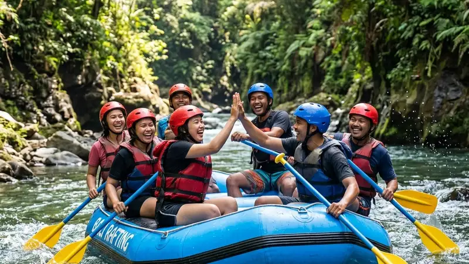

Kesalahan umum memesan jasa rafting di Malang meliputi mengabaikan standar keselamatan, salah memilih tingkat kesulitan jalur, serta melewatkan briefing sebelum aktivitas dimulai. Mengenali kesalahan ini membantu peserta lebih siap sebelum booking.
- Memilih operator hanya berdasarkan harga termurah berisiko mengabaikan standar keselamatan.
- Tidak menyesuaikan tingkat kesulitan jalur dengan kondisi fisik peserta dapat meningkatkan risiko cedera.
- Melewatkan briefing keselamatan mengurangi kesiapan peserta menghadapi situasi darurat.
- Tidak membaca kebijakan pembatalan dapat menimbulkan kerugian saat cuaca berubah.
- Mengabaikan kebutuhan khusus peserta, seperti anak-anak atau lansia, berisiko menimbulkan ketidaknyamanan.
Mengapa Memilih Operator Termurah Bisa Berisiko?
Memilih operator rafting hanya berdasarkan harga termurah dapat berisiko karena sebagian penyedia jasa mungkin menekan biaya dengan mengurangi kelengkapan alat keselamatan atau jumlah pemandu pendamping. Harga yang jauh di bawah rata-rata pasar sebaiknya menjadi sinyal untuk memeriksa lebih lanjut standar operasional operator tersebut.
Sebelum tergiur harga murah, calon peserta sebaiknya tetap mengonfirmasi kelengkapan pelampung, helm, dan rasio pemandu terhadap jumlah peserta dalam satu perahu.
Bagaimana Kesalahan Memilih Tingkat Kesulitan Jalur Bisa Terjadi?
Kesalahan memilih tingkat kesulitan jalur sering terjadi ketika peserta pemula memilih jalur yang sebenarnya diperuntukkan bagi peserta berpengalaman, atau sebaliknya, karena kurangnya informasi yang jelas dari operator maupun kurangnya kejujuran peserta mengenai kemampuan fisiknya sendiri.
Operator yang baik biasanya akan menanyakan pengalaman dan kondisi fisik peserta sebelum merekomendasikan jalur, namun peserta juga perlu jujur menyampaikan kondisi tersebut agar rekomendasi yang diberikan benar-benar sesuai.
Mengapa Briefing Keselamatan Tidak Boleh Dilewatkan?
Briefing keselamatan tidak boleh dilewatkan karena setiap operator dapat memiliki prosedur, sinyal komunikasi, dan titik rawan jalur yang berbeda-beda sesuai kondisi sungai yang digunakan. Peserta yang melewatkan briefing berisiko tidak memahami langkah yang tepat saat menghadapi situasi darurat di sungai.
Briefing biasanya mencakup teknik dasar mendayung, posisi duduk yang aman, serta cara merespons instruksi pemandu saat perahu mendekati titik jeram yang membutuhkan perhatian ekstra.
Apa Dampak Tidak Membaca Kebijakan Pembatalan?
Tidak membaca kebijakan pembatalan dapat menimbulkan kerugian finansial maupun kekecewaan, terutama apabila jadwal rafting harus ditunda akibat cuaca ekstrem atau kondisi debit air sungai yang tidak memungkinkan. Setiap operator biasanya memiliki ketentuan berbeda terkait pengembalian dana atau penjadwalan ulang.
Memahami kebijakan ini sejak awal membantu peserta mengelola ekspektasi, terutama bagi rombongan yang telah mengatur jadwal perjalanan secara ketat.
Bagaimana Menghindari Kesalahan Mengabaikan Kebutuhan Khusus Peserta?
Menghindari kesalahan ini dapat dilakukan dengan menyampaikan kebutuhan khusus, seperti keikutsertaan anak-anak, lansia, atau peserta dengan kondisi kesehatan tertentu, kepada operator sejak awal proses pemesanan. Informasi ini membantu operator menentukan jalur dan pendampingan yang paling sesuai.
Operator yang transparan biasanya juga akan menyampaikan apabila kondisi peserta tertentu tidak disarankan mengikuti jalur dengan tingkat kesulitan tinggi, demi menjaga keselamatan bersama.
FAQ
Apakah briefing keselamatan wajib diikuti semua peserta?
Briefing keselamatan sebaiknya diikuti seluruh peserta tanpa terkecuali, karena berisi informasi penting terkait prosedur darurat di sungai.
Bagaimana jika peserta memiliki riwayat kesehatan tertentu?
Peserta dengan riwayat kesehatan tertentu sebaiknya berkonsultasi dengan dokter sebelum mengikuti rafting dan menyampaikan kondisi tersebut kepada operator.
Apa yang terjadi jika cuaca berubah mendadak saat aktivitas berlangsung?
Pemandu biasanya memiliki prosedur evakuasi atau penghentian sementara aktivitas apabila kondisi cuaca dinilai membahayakan keselamatan peserta.
Arya
penulis artikel yang sudah berpengalaman di dalam dunia wisata outbound Batu Malang.